부안 청호수마을 앞마당, 모든 회원이 주먹을 쥐고 한 컷.
익산건축사회의 결속을 담은 이번 여행의 상징적인 한 장면.
DAY 2 · APRIL 18 (SAT)
서해의 섬, 장자도 걷기
맑게 갠 하늘 아래 선유도와 장자도를 걷고,
고소한 박대구이로 여정을 마무리한 둘째 날.
SATURDAY SCHEDULE
08:10숙소 출발
08:30변산온천 산장 바지락죽 · 아침식사
09:40선유도리 수월지 공영주차장
~11:30장자도 걷기
11:40대장봉 로컬푸드 · 박대구이백반 + 호떡
12:40집으로
08:51 · MORNING둘째 날의 시작
부안 청호수마을에서의 하룻밤이 몸을 풀어주었다.
숙소 앞 벤치에서 잠시 햇볕을 쬐며 출발 전의 나른한 아침을 보냈다.
간밤의 피로가 살짝 남아있었지만, 쾌청한 봄볕이 하루를 깨웠다.
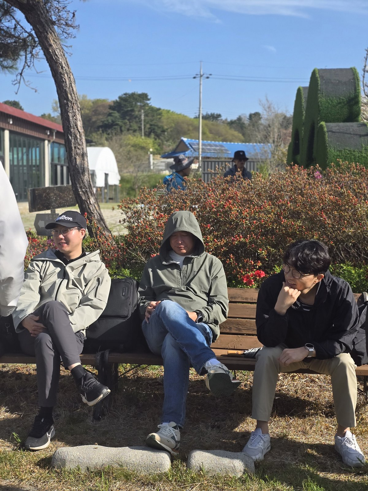
10:35 · GUNSAN선유도리, 바다 건너 다리를 건너다
군산 선유도리에 도착. 바다 위를 가로지르는 다리를 건너며 섬 여행이 시작됐다.
파란 하늘, 파란 바다 - 전날의 비가 언제였나 싶을 정도로 맑게 갰다.
길게 뻗은 보행다리 위를 걸으며, 회원들은 바다와 바람과 햇살을 함께 맞았다.
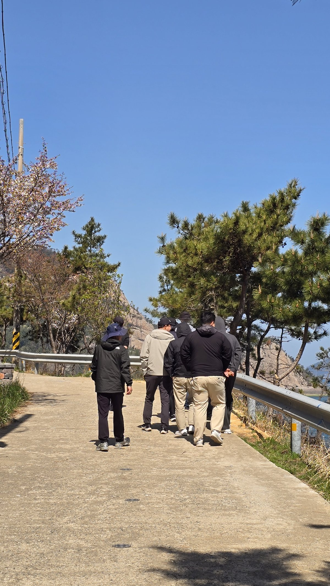
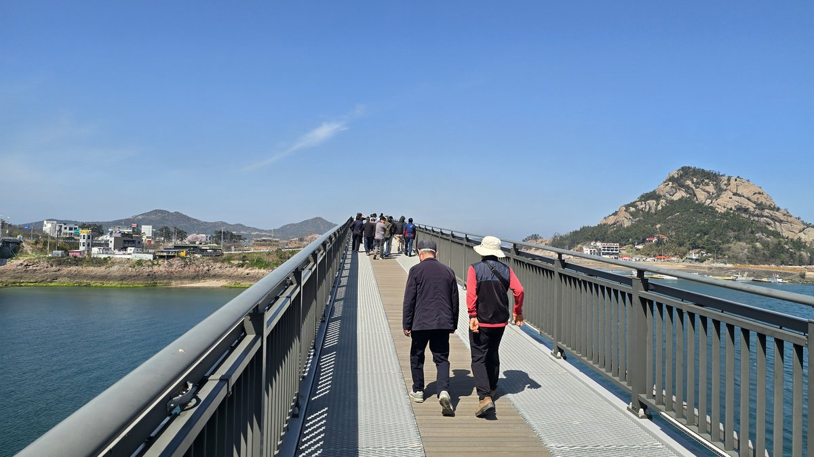
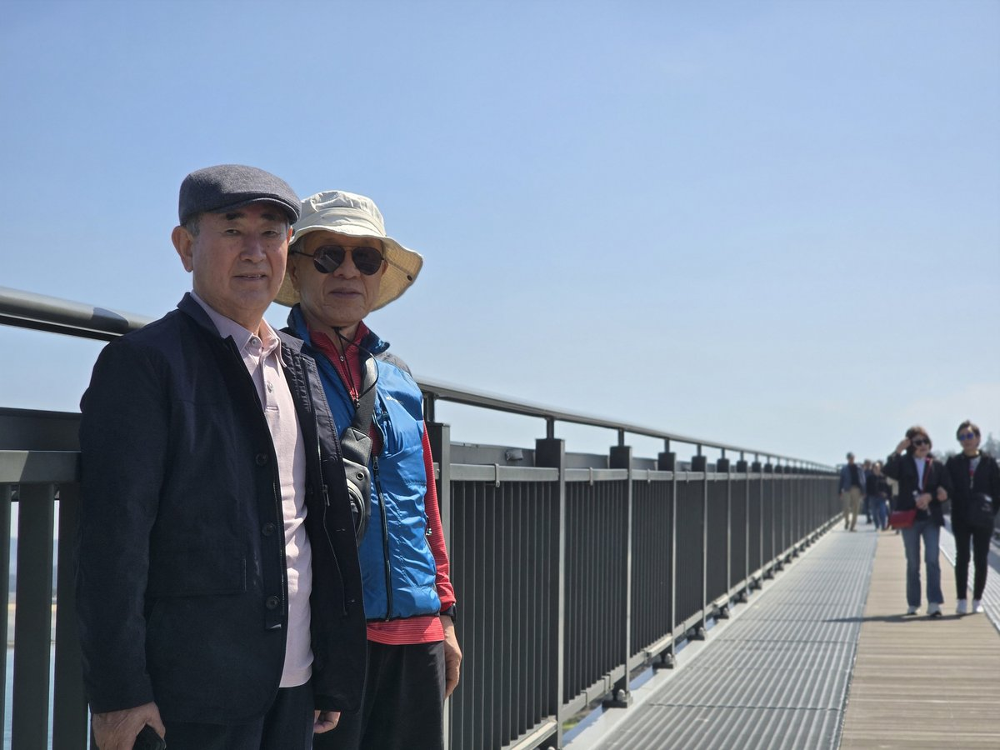
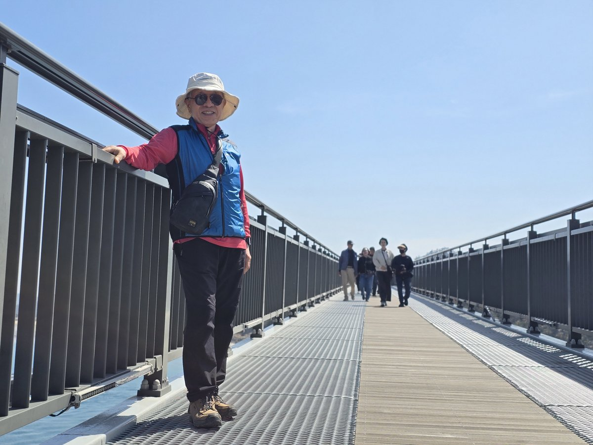
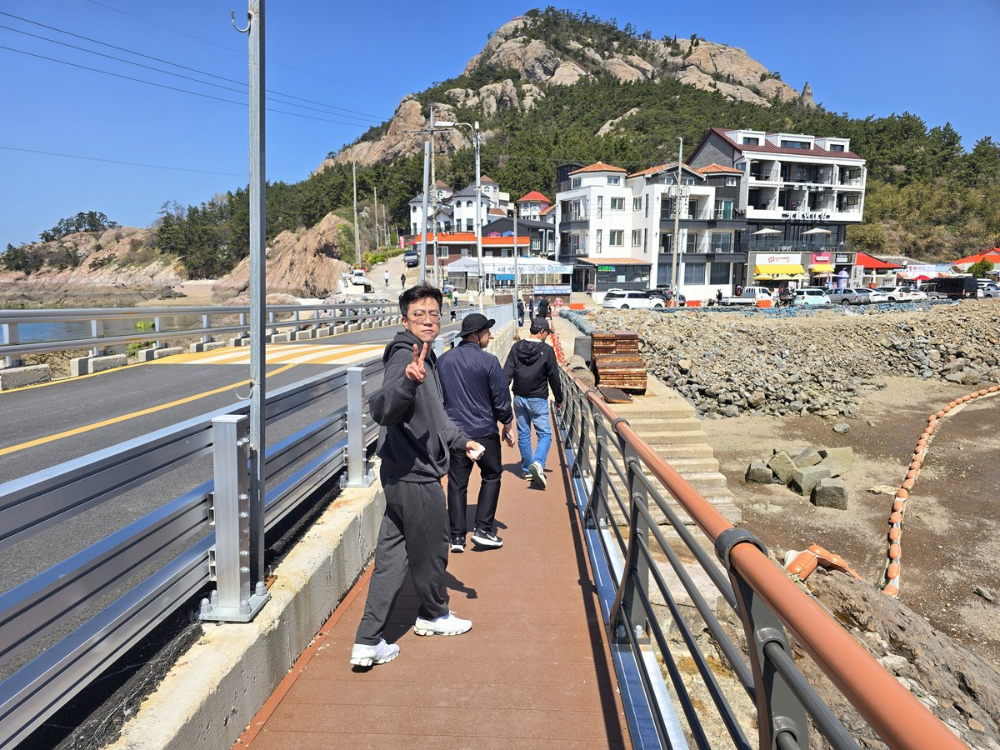
11:11 · JANGJADO장자도 전망대, 서해를 품다
장자도로 발길을 옮겼다. 전망대까지 오르는 길은 제법 가파르지만,
올라선 순간 발아래 펼쳐진 바다의 깊이가 그 수고를 보상했다.
섬과 항구, 어구가 쌓인 골목까지 모두 한눈에 들어왔다.
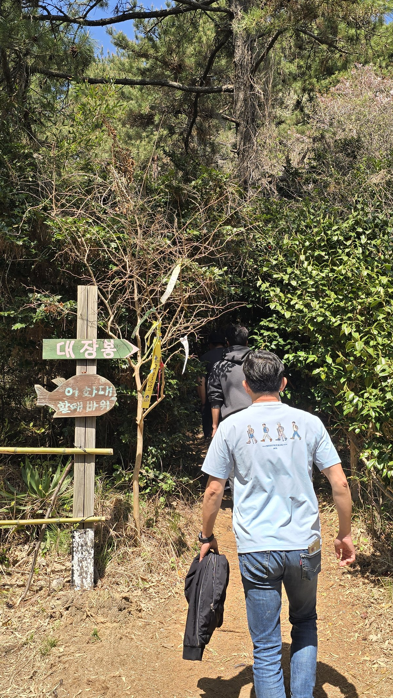
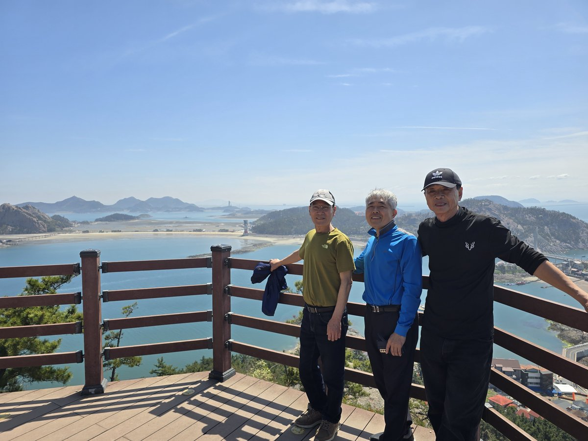
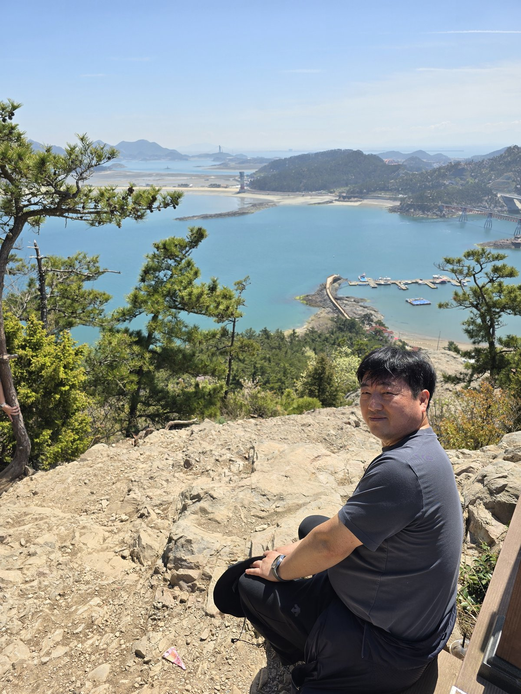
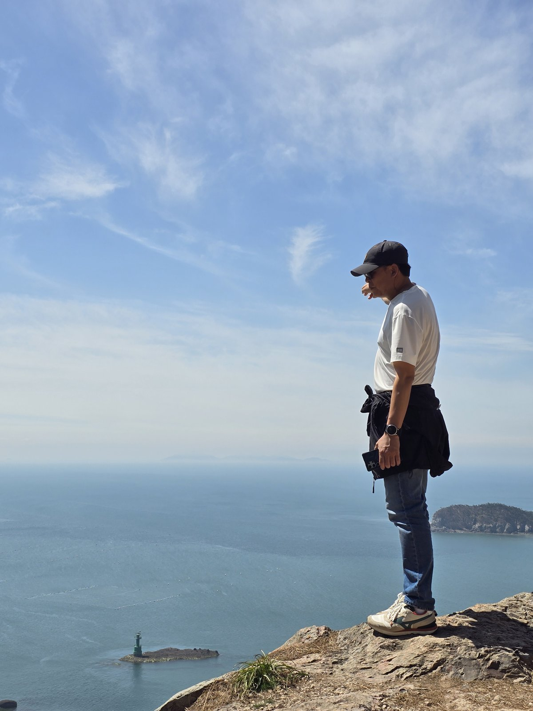
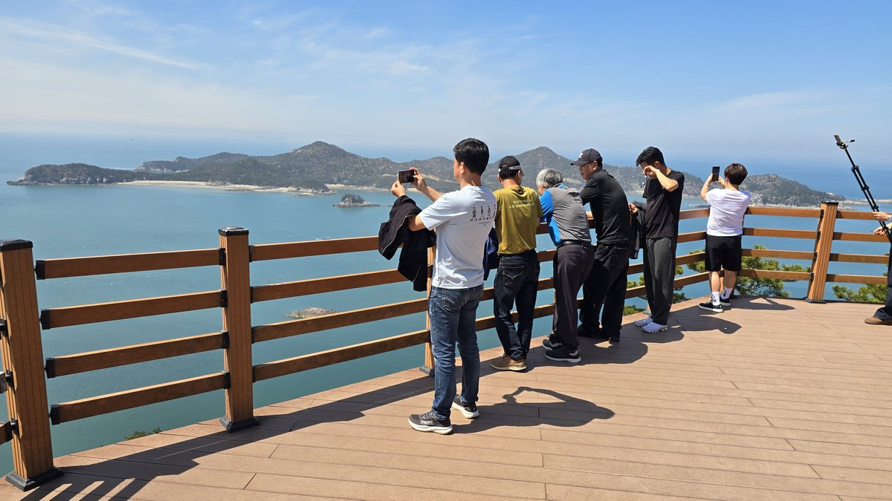
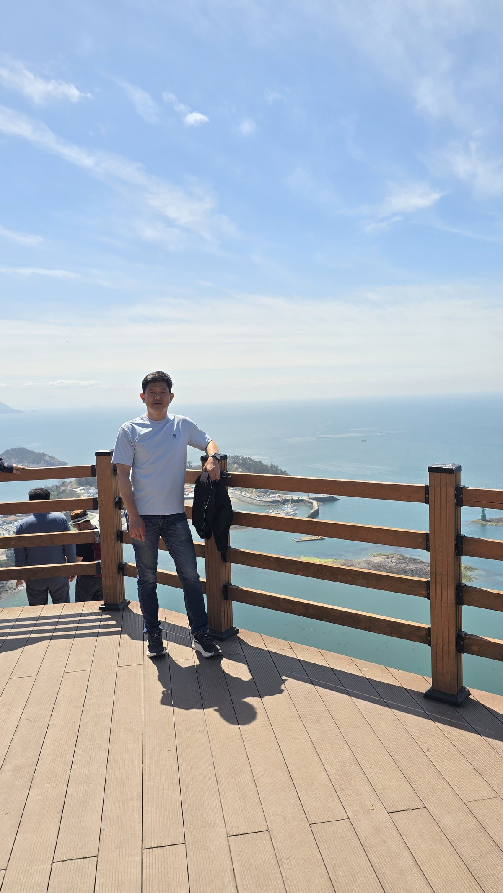
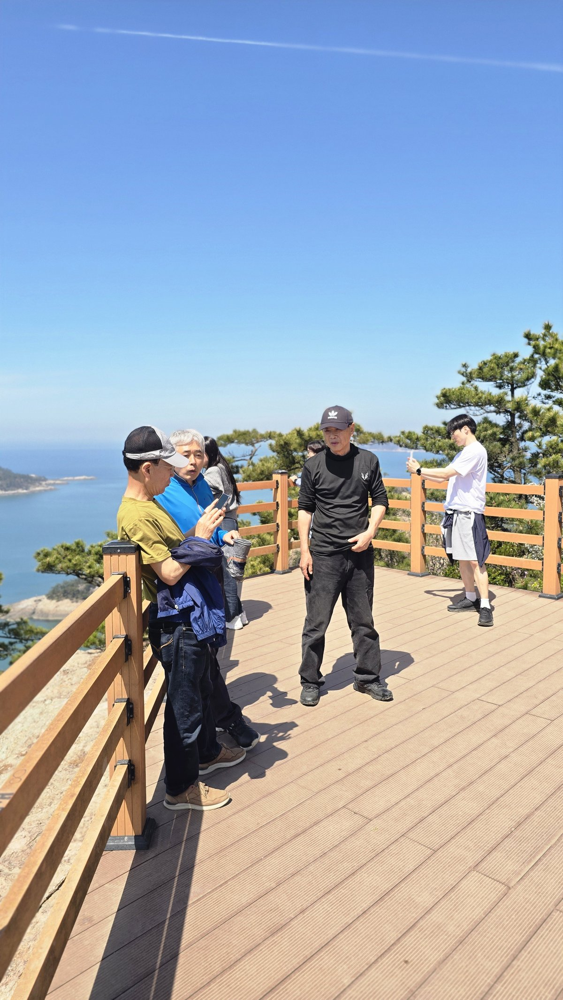
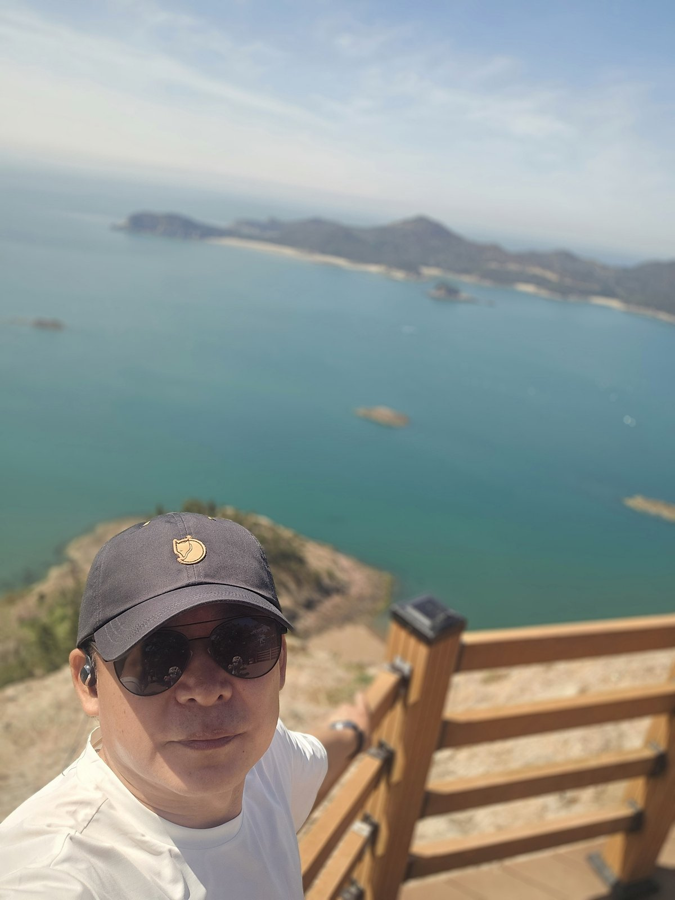
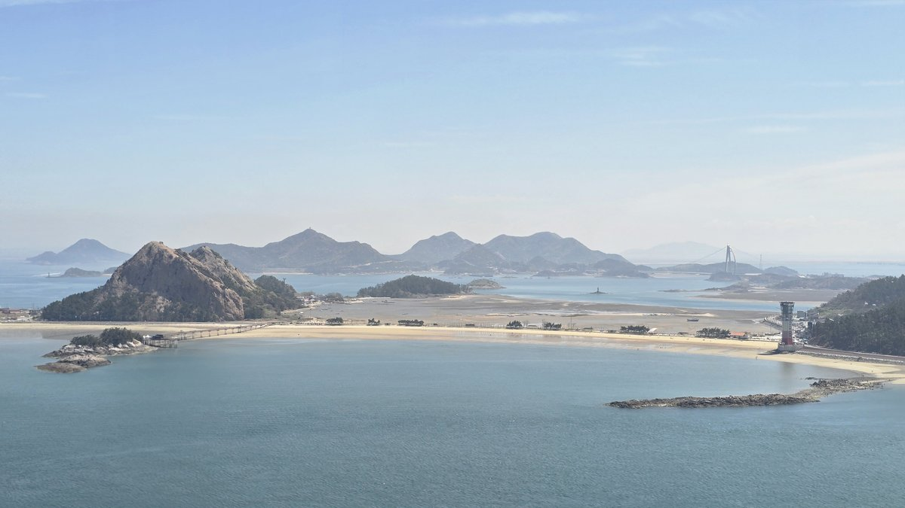
11:46 · ALLEY어구(漁具)가 쌓인 항구길
장자도 안쪽 항구로 내려가니, 말려놓은 어구들이 양쪽으로 길게 쌓여 있었다.
노란 줄과 주홍 그물이 이루는 색감이 마치 설치미술 같았다.
11:47 · FINAL선유스카이썬라인 앞에서
선유스카이썬라인 앞 캐릭터와 함께 기념 한 컷.
1박 2일, 짧지만 밀도 있는 여정이 이렇게 마무리됐다.
12:00 · LUNCH장자도에서의 마지막 한 끼
장자도 걷기를 마치고 섬 안의 식당에서 점심을 먹었다. 박대구이백반과 호떡 —
바다 여행의 끝자락에 어울리는 메뉴였다. 고소하게 구워진 박대는 살이 포슬포슬하게
일어나 밥도둑이라는 말이 딱 맞았고, 후식으로 나온 호떡은 뜨끈하고 달큰했다.
식사 후에는 바다가 보이는 카페 테라스에 자리를 잡고 마지막 여유를 즐겼다.
파라솔 아래에서 바라본 서해가 오래도록 기억에 남을 것 같다.